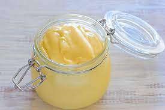

Homemade Mayo

Homemade mayonnaise is such a treat!
There are a few ways to make mayonnaise. We use our food processor with the small bowl attachment, but an immersion blender or making it completely by hand and large whisk will work. (Expect tired arms and strong biceps if you do choose to do it by hand).
All ingredients need to be at the same temperature. If you have cold eggs and no time to leave them out on the counter to come to room temperature, place the egg into a bowl of warm water. Set it aside for a few minutes before using in the recipe.
Makes approx 1 cup
Ingredients
- 1 large egg
- 1 tablespoon Dijon mustar
- 1 tablespoon red or white wine vinegar
- 1/4 teaspoon kosher salt, or more to taste
- 1 cup neutral flavored oil
- 1 teaspoon lemon juice
Directions
- Add egg to the small bowl of a food processor and process for 20 seconds. Add the mustard, vinegar, and salt. Process for another 20 seconds.
- Scrape the sides and bottom of the bowl, turn the food processor on then begin to slowly add the oil in tiny drops until about a quarter of the oil has been added (this is critical for proper emulsification).
- When you notice that the mixture is beginning to thicken and emulsify, you can be a little less strict. With the processor on, continue to add it slowly, but increase to a very thin stream instead of drops of oil.
- When all of the oil has been added, scrape the bottom and sides of the bowl and process for an extra 10 seconds. Taste mayonnaise for seasoning then add salt, lemon juice or extra vinegar to taste.
- Note, if the mayo seems too thin, slowly stream in more oil with the processor running until thick.